建築外觀，靈感取自於馬六甲海峽沉沒的葡萄牙大帆船─海上之花，館內展出自馬六甲皇朝至殖民地時代的海事史料。
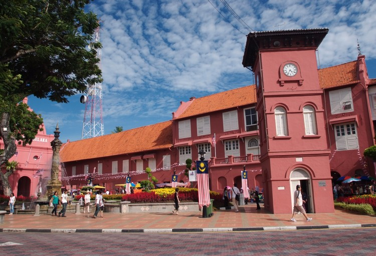
位於城市廣場上，這座荷蘭城有著厚重的木門、深紅色的牆壁及鍛鐵鑄成的鉸鏈，它是荷蘭殖民統治者所遺留下來最重要的遺跡。 建於 1641 年至 1660 年之間，荷蘭城被認為是東方世界最古老的荷蘭建築物。它是荷蘭磚瓦砌工及木工技藝的最佳呈獻之其中一個例子。 整棟建築粉刷成橙紅色，向來是荷蘭總督的官邸。如今荷蘭城內包含了馬六甲歷史博物館、人種博物館及文學博物館。
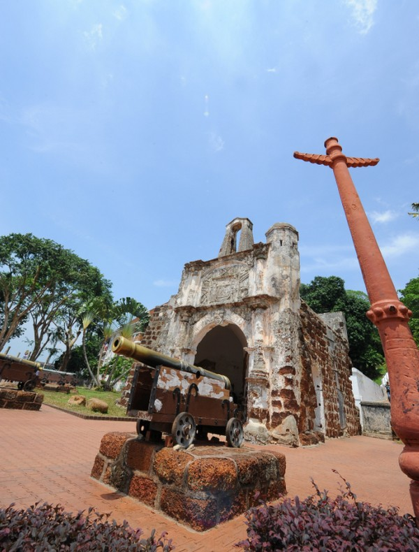 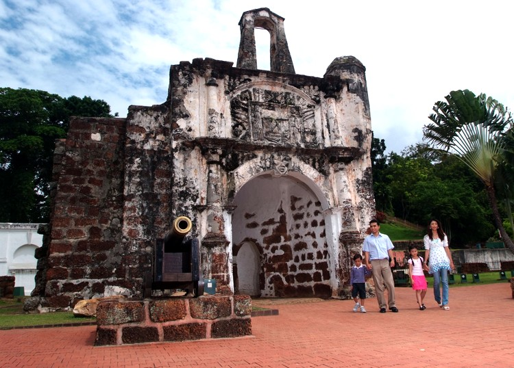
整座城堡後來幾乎被荷蘭人毀滅殆盡，只剩山丘上一小部分的要塞，由此可以俯望馬六甲市、舊港口及馬六甲海峽。 A'FAMOSA原本安置了許多大炮，可惜荷蘭人於1641年接管後，就慘遭破壞。1670 年時，荷蘭人嘗試修補其中的幾座要塞，於此同時，他們亦在此安置了荷蘭東印度公司的武器。
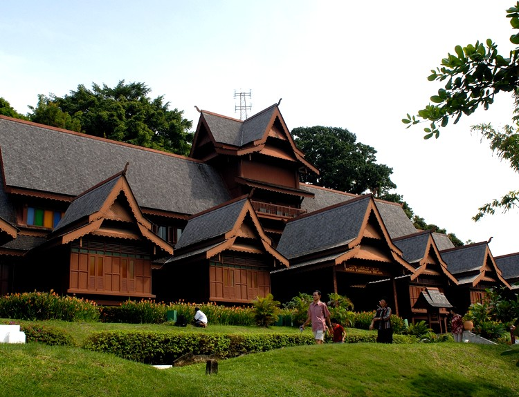
距離A'FAMOSA不遠處，於聖保羅山丘下有一座仿造的木製馬來蘇丹皇宮，此處即是文化博物館了。整座皇宮是依據馬來紀年對於 15 世紀皇宮的記載，仿造建築而成。\ 館內主要的展示品是馬六甲文化，不過，其他來自馬來西亞不同地方的衣服、武器、石頭碑銘、樂器及相片等，亦在展示的行列。此處設有一個立體模型，試圖描述蘇丹庭院的情景。
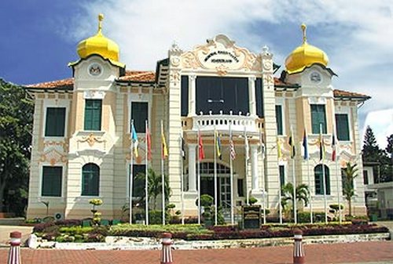
此館位於 1912 年所建的英國別墅內，這裏收藏有手稿、錄影帶、影片及幻燈片，詳細描述了1957年馬來亞邁向獨立的整個過程。 此地曾經是殖民政府馬六甲俱樂部的所在地，其建築風格相當別致，上面蓋了一個很有氣派的圓頂。1957年時馬來西亞的首任首相曾在此宣佈國家即將獨立的消息。
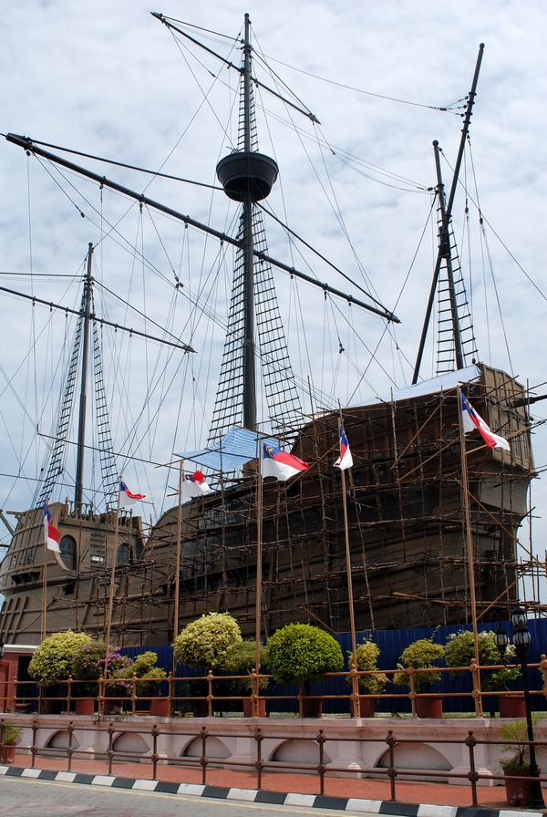
海事博物館過去一點，就是皇家馬來西亞海軍博物館，這裏擁有海軍紀念物品及電腦時代之前的軍艦裝備。此館存放著1817年於馬六甲沉船的DIANA號船隻內，打撈起來的珍貴陶器。 當年DIANA號是從CANTON航往馬德拉斯的途中。在1993年的打撈行動中，發現了DIANA號內擁有大量的陶瓷器。
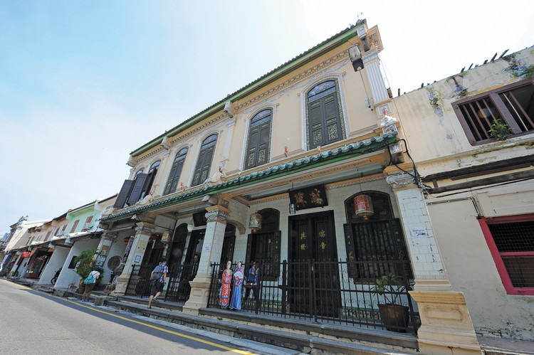 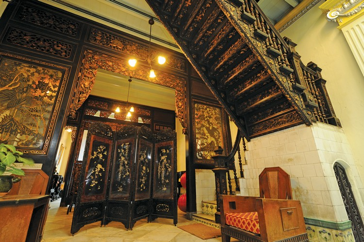 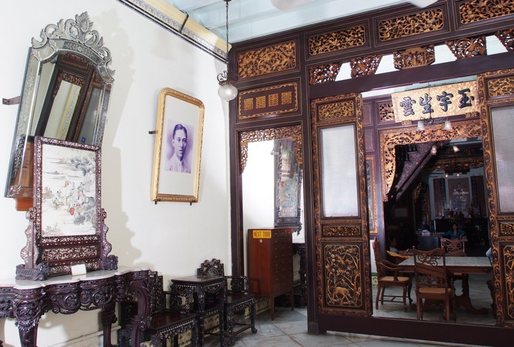
海峽華人或峇峇娘惹是吸取了馬來文化的華裔貴族後裔。在郭陳禎祿路上，有著一整排19世紀海峽華人的店屋及古老屋子，這裏儼然是小型的峇峇娘惹博物館。 這些巴羅克風格的建築物是典型富裕華人的住家。長型的屋子，屋內又非常寬敞，裏邊有一個天井，可以容許陽光及雨水進入屋內。 那些厚重的木制家私，皆是以中國的紅木製成的，其設計則融合了中國、英國維多利亞及荷蘭風格。
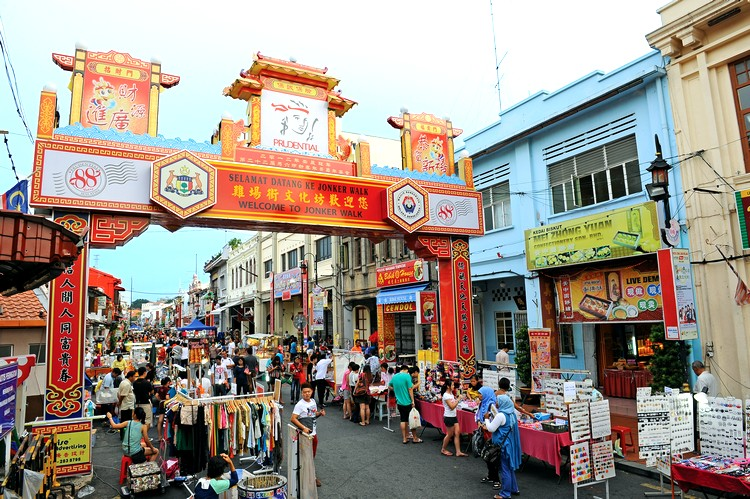 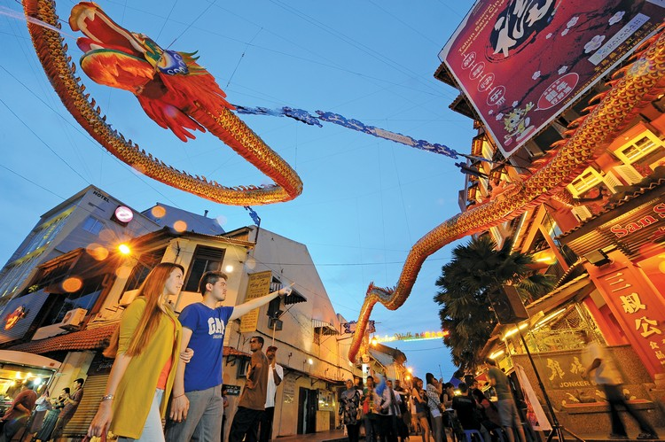 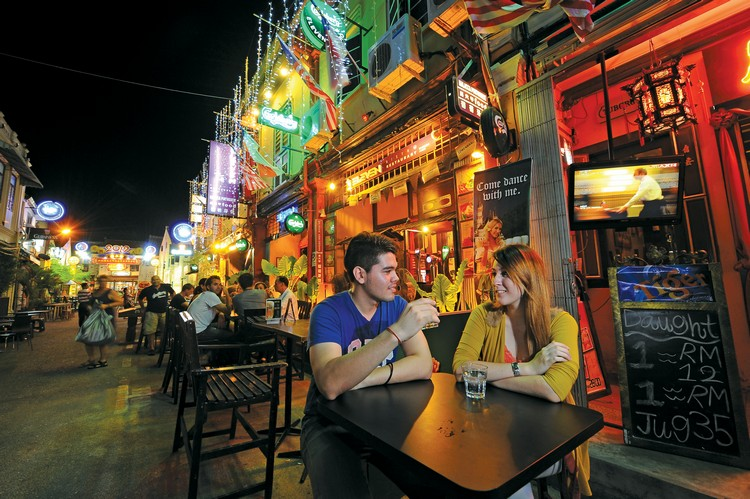 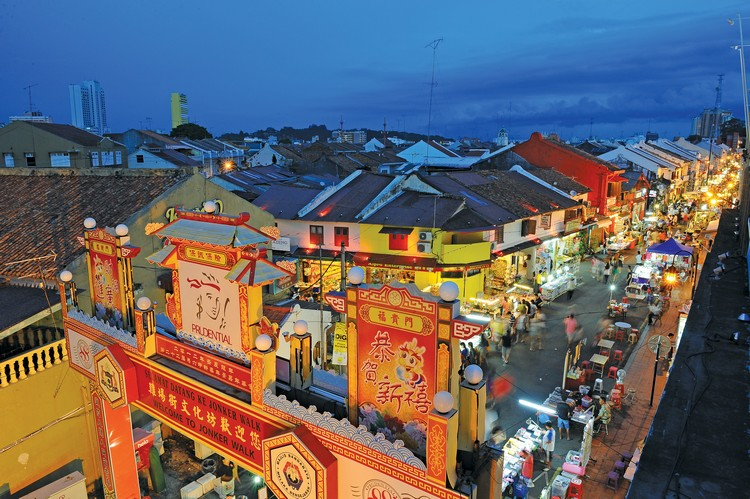
馬六甲唐人街位於馬六甲河的西邊，這是一個多姿多彩值得一遊的好地方。在狹窄的街道上，您將會找到許多舊式商店、廟宇及回教堂等。住宅區和商業區混合在一起，這裏還保留著古時候馬六甲的一些原貌。 HANG JEBAT路，之前稱為JONKERS街，是全世界古文物收藏愛好者都知道的一條街。這裏有許多售賣古文物的商店，有些古董可以追溯到300年前的歷史。 有些商店還收藏有別致的東方紀念物品，如：雕刻品、石塊、鐵器及瓷器等。這裏還有家私點，專門售賣複製家私。
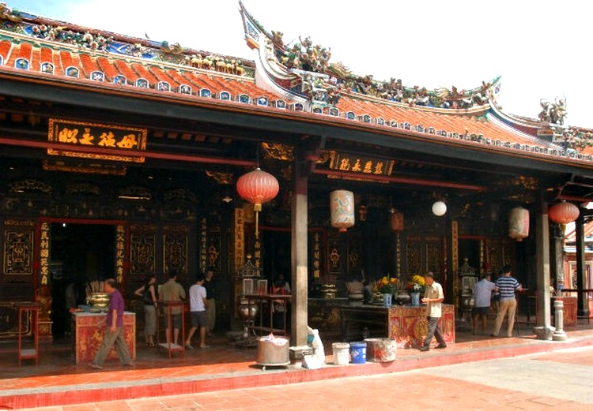
此廟建於 1646 年，是馬來西亞最古老的華人廟宇，廟內有碑銘紀念明朝大使鄭和將軍第一次到訪馬六甲。青雲亭裏有許多厚重的木門。 廟宇的屋頂是以玻璃及瓷土作成的中國神秘動物來作裝飾。廟內的裝飾同樣莊嚴，主要的祭拜大廳供奉著三座祭壇，佛、儒、道各一座。所有的建築材料及工匠，皆是從中國引進來的。
 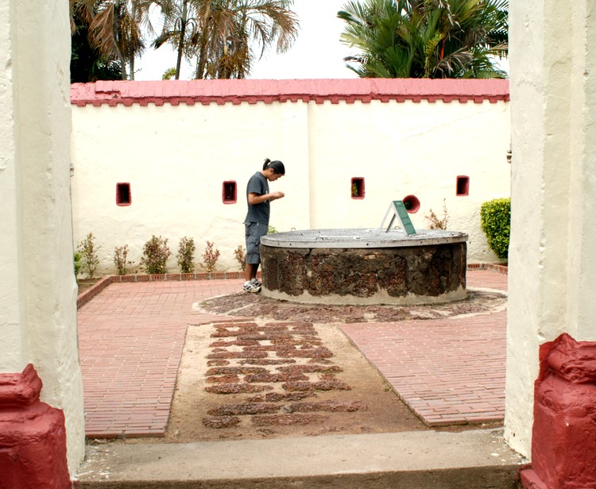
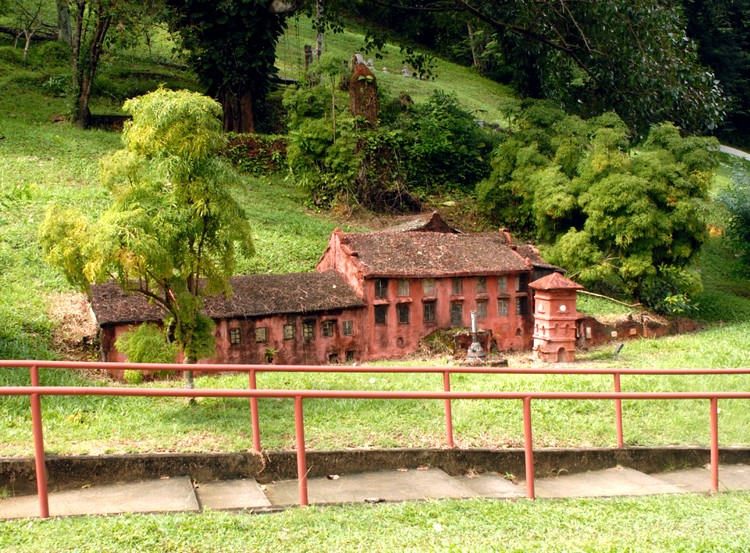
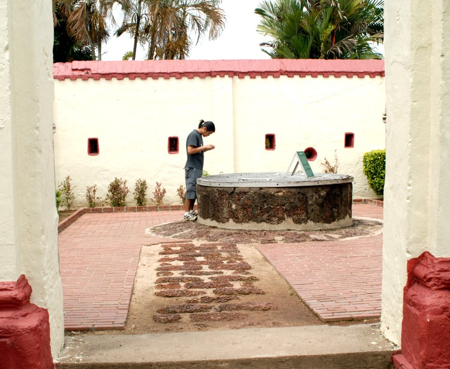
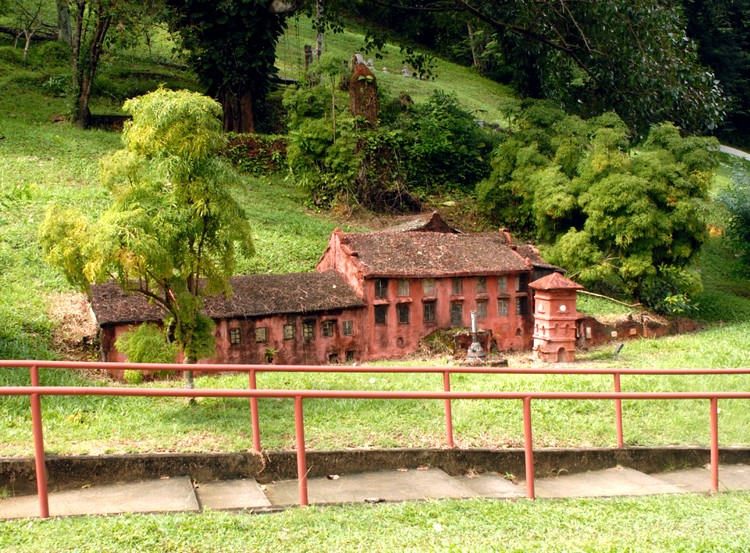
三寶廟就在三寶山的山腳下，這座廟是為鄭和而建，後人已經將這位明朝的大使當作神明來崇拜。此廟建於1795年。 15 世紀中，明朝皇帝將漢麗寶公主許配給當時的馬六甲蘇丹滿素沙，以建立兩國的友好關係。漢麗寶公主帶了大批隨從，包括500名婢女，前來馬六甲。馬六甲蘇丹特地將三寶山獻給漢麗寶公主，作為她的住所。 三寶廟旁有一口漢麗寶井，是公主的隨從為她挖掘的，除了提供她個人使用以外，也是市內的主要水源。這口井是敵對勢力的主要攻佔目標，他們或是占為己用或者對之下毒。 據說這口井永不枯竭，即使是嚴重乾旱亦不例外。如今，這口井已轉為“許願井”，據說若有人在此投下一個錢幣，他一定會重遊馬六甲。 三寶山有兩座山丘和它連接在一起，這兩座山丘是華人墓園，總面積約有25公頃。此處擁有超過一萬兩千座墳墓，有些可追溯至明朝時代。
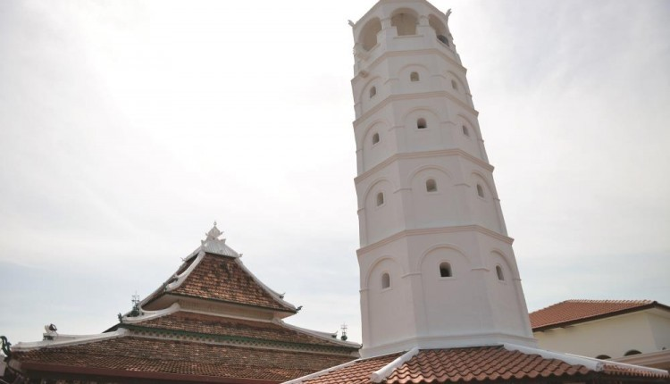 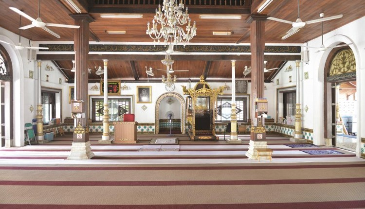
 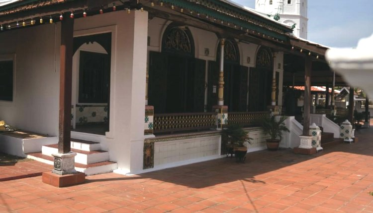
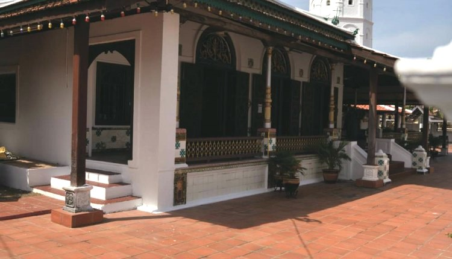
此回教堂位於通往波德申路上之TRANQUERA 區，擁有超過150年的歷史。其四方形、多層屋頂的設計充滿蘇門答臘的建築設計風格。 這座回教堂非常獨特，它並沒有一般回教堂的圓頂，反而建了一座寶塔，其主要建築物亦呈金字塔形。在回教堂周圍的土地上，有一座柔佛蘇丹胡先的墓陵。 蘇丹胡先即是於1819年，將新加坡割讓給來佛士的那位柔佛蘇丹。
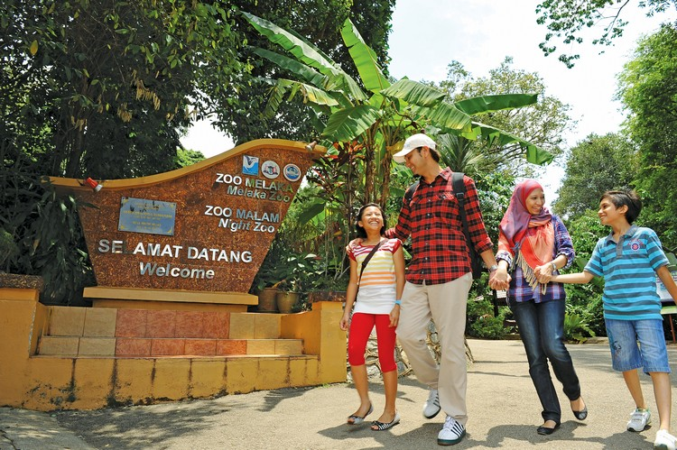 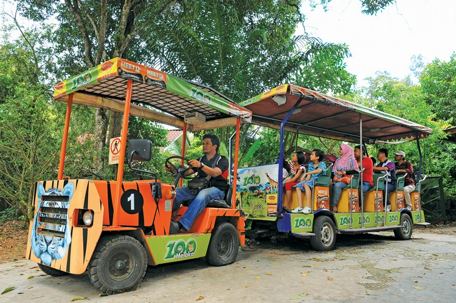 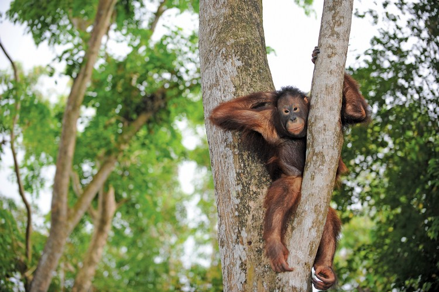 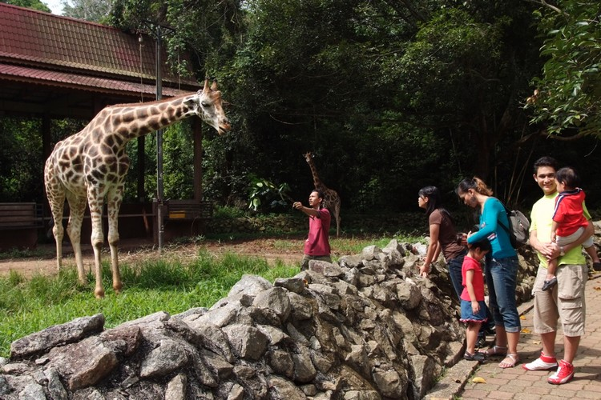
馬六甲動物園是馬來半島其中一座最好的動物園。動物園內野生動物及家畜的種類繁多，並且是按照它們的自然生態環境而設。這裏擁有良好的規則，同時成功的將人工及自然環境調和在一起。 遊客可以騎在象背上及接近猴群。此外，還有許多提供全家人一起享樂的遊玩的設施。
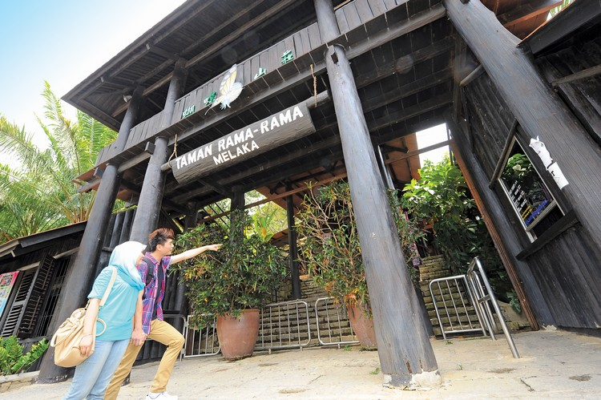 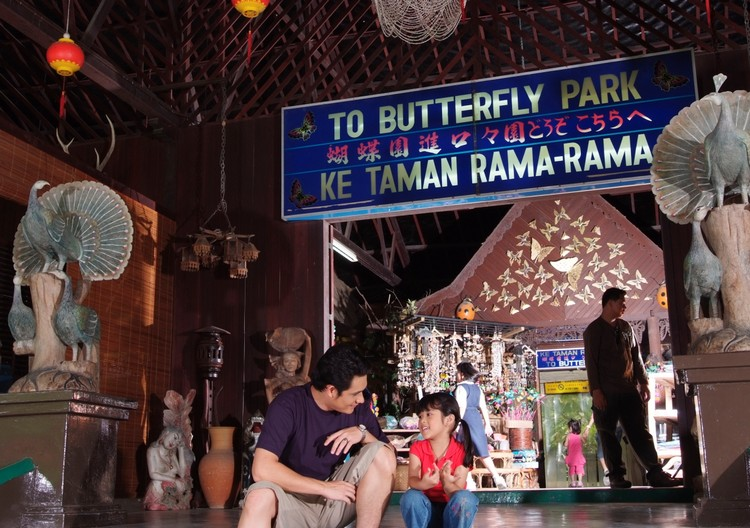 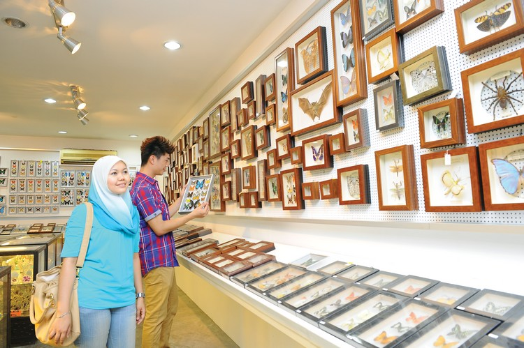 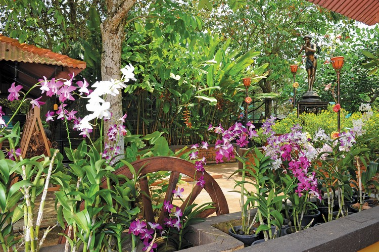
這座蝴蝶及爬行動物園占地3公頃， 除了200種不同種類的蝴蝶外，遊客還可以在此觀賞到不同種類的蛇、蠍子、蜥蜴及蜘蛛。 它是本區域其中一座最大的布惘蝴蝶公園及昆蟲園區。此座公園擁有最著名的RAJA BROOKE及BIRDWING品種。公園內的博物館展示超過400種動物標本。 還容納了超過一千尾蛇，包括含有劇毒的蛇類及馬來西亞出產的蛇類等。這裏也有罕見的黃色蟒蛇及一尾白蛇。另外，此處還有兔子園、一座烏龜池、一座日本鯉魚池及一座迷你蛇池。
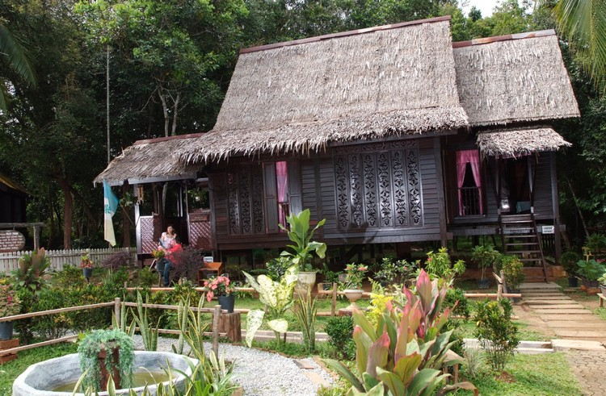
這座主題公園內仿造了馬來西亞各州以及其他東南亞國家的傳統屋子，將它們縮小建造於此。每一棟屋子內，各安置了一些代表該區的手工藝品及穿著傳統服裝的蠟像。逢週末，這裏還有文化表演。

從馬六甲市區往麻坡方向行駛大約4公里，就會抵達KAMPONG DUYONG，這裏有一口被稱為聖井的漢都亞井。漢都亞是著名的馬來英雄，生處蘇丹滿素沙掌權時期。 他的勇敢及功績已經稱為馬來歷史的傳奇故事。當地人相信這口井是漢都亞靈魂的住所，他已化身為一頭白鱷魚。據說只有靈性純潔者，才得以看到這頭白鱷魚。 村人相信漢都亞井的井水具醫療作用，而且喝了它能帶來好運。漢都亞被安葬在丹絨吉寧（TANJUNG KLING），距離市區15公里處。
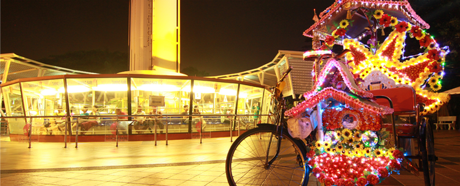
在80公尺高的高空，眺望方圓5公里的古城美景，遊客可窺探馬六甲海峽與有趣的歷史景觀 ： 紅屋、聖保羅教堂遺蹟、獨立紀念館、州等回教堂等等。 達明沙里旋轉觀景高塔共110公尺高，一次可乘戴80人，過程僅需7分鐘，肯定讓遊客留下深刻的印象，遊客絕不可錯過。